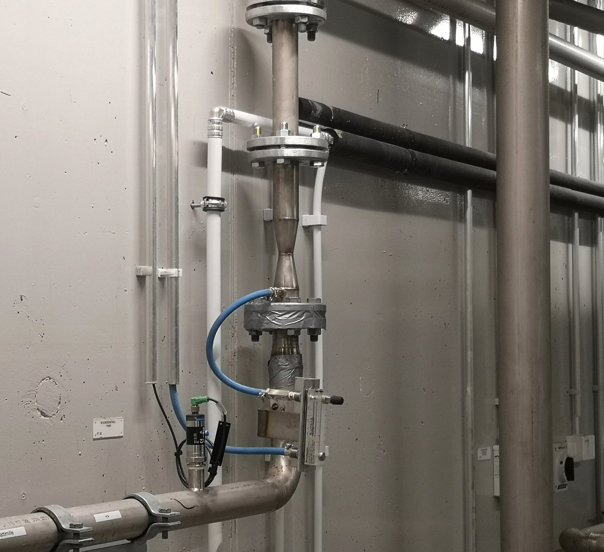

One principle, twelve products.
Everything below is the same measured principle — gas dissolves into flowing water in under a second. What changes is the job the unit is built for. Every unit goes into the pipe, is sealed, and fits a plant that is already built.
Built to be bolted in

OxTube in service at a Finnish plant — installed vertically, which the geometry allows. Flanged modules assemble in the order the process needs and unbolt as easily for cleaning. What you see is the whole footprint: no basins, no towers.
OxTube in nine claims
The product-highlight list SansOx publishes: fastest gas-to-liquid dissolving · effective mixing · efficient pH control · installs into existing pipeline · vertical installation possible · aerates even without external energy · modular to customer requirements · small footprint · easy to remove and clean.
The family
Named configurations of the same core process. Ask us which one your water needs — that is exactly what the free call is for.
OxTube
The sealed pipe section that separates, activates, clarifies and re-dissolves — with air, oxygen, ozone or CO₂. Every other product is built around it.
RadOx
Compressed air dissolved through Booster and OxTube units strips radon inside the pressurised pipeline. Six stations in the Philippines run under the 11 Bq/l limit.
IroX
OxTube with GasRemox and sand filters for groundwater iron and manganese — delivered as a container unit or installed inside the pump house.
UGOx
Strips dissolved CO₂ and other unwanted gases in the pressurised line — pH correction without adding chemicals.
GasRemox
The gas-separation stage: collects and vents what the process strips out of the water. Works inside IroX and UGOx deliveries.
PharmOx
OxTube plus an ozone generator, containerised or standalone — breaks pharmaceutical residues and removes bacteria and viruses from surface raw water without reaction tanks.
DripOx
Raises dissolved oxygen in irrigation water — studies link higher DO to faster crop growth, and drip lines feed it straight to the roots.
GolfOx
A submersible-pump barrel unit that circulates a water hazard through OxTube — works in shallow water and under winter ice.
Lady Bug
The light end of the family: circulates and aerates shoreline water so algae never gets started — for cottage shores, harbours and small ponds.
DCWOx
Treated water usually leaves a plant oxygen-poor. DCWOx raises dissolved oxygen at the discharge point, powered by the flow itself.
RiverOx
Units anchored in a river and driven by the current — aeration without pumps where the water already moves fast enough.
ClariOx
Circulates and clarifies pond and collection-drain water, homogenising the flow so the treatment behind it works more evenly.
Product names and configurations from the sansox.fi product pages. Also in the family: the Booster stage, which raises line pressure ahead of an OxTube.
Services
You are not buying a pipe, you are buying a result — so we also teach the process.
Technical consultation
Bring your flow rates, targets and permit limits. You get an honest answer on whether OxTube fits — with numbers.
OxTube aeration course
Tailored sessions for municipal, industrial, agriculture, aquaculture and environmental projects.
Technology training
Operator-level training for teams running an OxTube installation.
30 minutes, technical, free
Describe your water and your flow — we will tell you which configuration fits and what we would measure first.